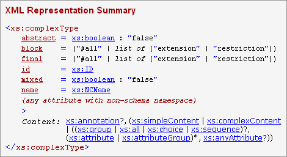
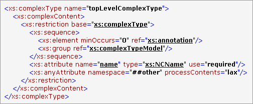
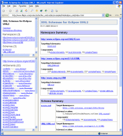

DocFlex/XML (Kit) - XSDDoc - XML Schema Documentation Generator
- Overview
- Key Features
- Examples
- Getting Started
1. Overview
XSDDoc is a high quality documentation generator
for any W3C XML Schema
able to produce both multi-framed Javadoc-like HTML and printable
RTF documentation.
XSDDoc is the first big template application of DocFlex/XML (see
DocFlex/XML | Roadmap),
which is intended both to demonstrate full capabilities of this technology and
to deliver a valuable software tool.
As XML becomes the universal medium for storing and transferring various computer
information and more XML applications appear, the XML schemas serve those
rails on which such applications are being developed and moving on.
Now, XML schemas are growing ever more complicated, may consist of a lot of modules
designed by different software architects.
All of this makes new XML schemas nearly impossible to understand without
a special documentation provided by their authors or, perhaps, generated by
a special tool from the schemas themselves.
DocFlex/XML XSDDoc is one of such tools. It will allow you to decipher any XML schema
and represent it in the form of a clear-cut documentation, which will help you
to understand what that schema actually describes.
The XML Schema Documentation Generator is powered by “XSDDoc”
set of templates, which includes two main templates:
-
XSDDocFrames.tpl template allows to generate a Javadoc-like multi-framed HTML
documentation. Click on the screenshot to see a sample documentation produced with this template:

-
XSDDoc.tpl template is designed specifically to generate a single file documentation
in all supported output formats, from which the most important one is RTF that delivers
a splendid quality MS Word (or Linux OpenOffice.org)
friendly printable documentation. Click on each picture to see the real size page preview:
Besides them, there are many other sub-templates used internally.
They are called as procedures from the both main templates (as well as from themselves)
to make the whole generator work.
In spite of being implemented in a very unconventional way (but rather just because of this!),
DocFlex/XML XSDDoc offers plenty of highly sophisticated
capabilities impossible to achieve using traditional
XSL Transformation approach (to which, actually, all other known to us
XML Schema documentation generators are reduced in one or another way).
You may probably find something similar to this being a part of the expensive
"professional" or "enterprise" editions of the products provided by big software vendors.
Normally, such features need to be developed for months (or even years) and,
because of this, cost a lot!
DocFlex/XML allowed us to do the same (and even more)
on a quite different scale of time.
Now, we are able to offer the result of this work free for everyone!
Moreover, using a visual graphic Template Designer provided with DocFlex/XML full edition,
you can customize all XSDDoc templates, as you need. For instance, you can easily translate
any messages specified in templates from English into your native language, insert your company
logotype, change documentation design and content, extend with your own functionality and so on.

This picture shows the XSDDoc.tpl template open with the Template Designer
under Linux and the generator dialog
invoked to generate with this template a sample XML schema documentation in RTF format
(click to see the full-size screenshot).
2. Key Features
General Processing
-
Possibility to generate a single documentation from any number of
XML Schema documents (XSD files),
with separate tracking of components for each target namespace, every single schema
and any interactions between them.
-
Automatic import of any schemas specified within other schemas
by <xs:import>, <xs:include> and <xs:redefine> directives and adding them
for documenting (with possibility to download the imported schemas from Internet
by the URLs specified in those directives).
XML Namespace Support (general)
-
Correct binding of namespace prefixes defined and used in the original XSD documents
to the names of the schema component shown in the documentation, which
makes the generated documentation more convenient and easy to read.
That feature seems to be especially difficult to support, as we have never seen it in any
other existing XML schema doc-generators so far.
-
Optional inclusion in the generated documentation the Namespace Binding Report, which
allows to quickly find for any namespace prefix used in the source XSD documents
the namespace URI associated with it and the location of where that namespace
binding is specified.
XML Source Documentation
-
Reproducing the original XML source for the whole XML schema document.
-
Reproducing a fragment of the XML source defining each particular schema component
and inclusion it in the component's documentation.
-
Highlighting with separate colors the XML markup, tags, attribute names and values,
XML comments and other XML source declarations.
-
Direct hyperlinks from the reproduced XML source to the documentation
of the referenced schema components as well as to external Internet pages
from the URL values of attributes.
Component Documentation (general)
-
Separate documentation for all major XML schema components:
- Elements (both global and local)
- Complex and Simple Types
- Element Groups
- Global Attributes
- Attribute Groups
-
The XML Representation Summary generated for each schema component shows a sketchy
representation of possible XML constructions this component describes together with how
their declarations may look in an XML file. In particular, this includes:
- A list of possible attributes an XML element may have.
- The type and possible values for each attribute.
- The element content representation, which has two different forms for
simple and complex content models.
- The element simple content is represented in the form of a data type and possible values
the element may enclose.
- The element complex content is represented with the use of extended Kleene operators
(see below).
Here is how such a representation may look:

-
The element Complex Content Models, which represent all possible combinations of children of an element,
are shown within XML Representation Summary of certain elements (see 'Content' field on the picture above),
complex types and element groups.
Complex Content Models are represented using Kleene operators (those used in
DTD) extended with
two more operators to cover all situations allowed by W3C XML Schemas. The following table shows
all operators used in Complex Content Model representations:
| Operator |
Description |
|
,
|
sequence
|
|
|
|
choice
|
|
()
|
grouping
|
|
?
|
0 or 1 times
|
|
+
|
1 or more times
|
|
*
|
0 or more times
|
|
Extended operators
|
|
×
|
The idea of this operator can be expressed by formula:
a × b = ((a, b) | (b, a))
This operator is used in two situations:
-
To represent an unordered content model (which is the one defined with <xs:all> compositor)
-
To represent a mixed content model (i.e. when any text is allowed before, between and after elements).
For example, a content model for marked text used in messages at some programming forum web-sites
(that is, a text with allowed italic, bold and code markup) may be represented as the following:
{text} × (i? | b? | code?)*
|
|
[n1, n2]
|
A general cardinality operator
(n1 can be 0 or any number;
n2 is any number or *).
This operator is used in those rare situations when Kleene cardinality operators
(?, +, *)
are not enough.
For example:
A+
is the same as
A[1,*]
|
-
A unique comprehensive Component Usage Report, which will allow you to track for each component
where and how it is used within this and other XML Schemas included in the documentation.
-
Optional inclusion in the component documentation the reproduced fragment of the XML source defining it:

The underlined values of attributes are hyperlinks to the corresponding locations in the documentation
or external web-pages in Internet
(see Examples | Framed HTML).
Element Documentation
Type Documentation
3. Examples
XML Schema for XML Schemas
The following XML Schema documentation has been generated by the basic XML Schema
which defines any other XML schemas (that is W3C XML Schema language itself).
The source of that XML schema can be found by URL
http://www.w3.org/2001/XMLSchema.xsd,
which is exactly from where it was automatically downloaded by the generator while generating the
documentation shown here.
Note: |
You can also generate that very documentation easily by yourself.
Just run generator.bat,
select XSDDocFrames.tpl or XSDDoc.tpl template and
specify URL 'http://www.w3.org/2001/XMLSchema.xsd' in the “XML File(s)”
field of the generator dialog.
Then, click “Run” button.
If you have a direct access to the Internet, the generator will download the XMLSchema.xsd
file automatically and generate all the "XML Schema for XML Schemas" documentation shown below.
|
Framed HTML
This is a Javadoc-like framed HTML documentation generated by
'XMLSchema.xsd' schema using XSDDocFrames.tpl template.
Click on the screenshot to see the real HTML:
The minor schema 'xml.xsd' also visible in this documentation is imported by the main one
(XMLSchema.xsd).
It also has been automatically downloaded by the generator from the Internet location specified in
<xs:import> directive and added to the documentation.
So before this, we didn't even know much about its existence.
RTF Demo
The following screenshots show pages of the XML Schema documentation generated in RTF format
by 'XMLSchema.xsd' schema using XSDDoc.tpl template.
Click on each picture to see the real size page preview:
Overview, namespace & schema summaries:
Element documentation:
Type documentation:
The following picture shows a similar RTF documentaton generated under Linux and open with OpenOffice.org Writer
(click to see the full-size screenshot):
Eclipse UML2 Schemas
The following documentation has been generated with the XSDDocFrames.tpl template
by much bigger XML Schemas. Those XML schemas are found in the Eclipse UML2 Java SDK
and, apparently, used to define the mapping of UML2 to XMI.
Click on the screenshot to see the HTML documentation:

4. Getting Started
If all you need is to generate XML Schema documentation immediately,
just follow this quick start instruction:
-
Edit generator.bat to specify the 'JRE' variable according
to the location of Java 5 or Java 1.4.x installed on your system.
If you don't have Java 5 or Java 1.4.x installed on your system, you can freely
download and install Java Runtime Environment (JRE) version 1.5.x
from Sun Java Technology web-site: http://java.sun.com
-
Run generator.bat. You will see the
generator dialog.
-
In the “Template” field, select XSDDocFrames.tpl template
to generate a framed HTML documentation or XSDDoc.tpl template to generate
a single file RTF documentation.
-
In the “XML File(s)” field, specify one or many XSD files from
which you want to generate your XML schema documentation.
When multiple files are specified, make sure that each pathname or URL is enclosed in double quotes.
-
In the “Output format” field, select HTML or RTF format
(RTF will work only with XSDDoc.tpl template!).
-
Click “Run” button to start generator.
For a huge schema (or, perhaps, on a slow computer), wait some time while the generator
processes your schema.
-
That's all.
Enjoy an incredible quality
XML Schema documentation you won't produce with anything else!
Copyright© 2003-2006 Filigris Works. Leonid Rudy Softwareprodukte. All rights reserved.
To contact us, please visit
www.filigris.com or e-mail to: contact@filigris.com